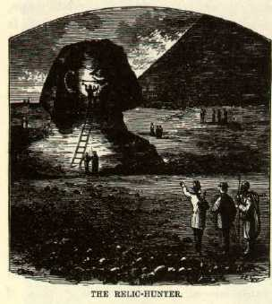

The SphinxAfter years of waiting it was before me at last. The great face was so sad, so earnest, so longing, so patient. There was a dignity not of earth in its mien, and in its countenance a benignity such as never anything human wore. It was stone, but it seemed sentient. If ever image of stone thought, it was thinking. It was looking toward the verge of the landscape, yet looking at nothing -- nothing but distance and vacancy. It was looking over and beyond everything of the present and far into the past. It was gazing out over the ocean of time -- over lines of century waves, which further and further receding, closed nearer and nearer together, and blended at last into one unbroken tide, away toward the horizon of remote antiquity. It was thinking of the wars of departed ages; of the empires it had seen created and destroyed; of the nations whose birth it had witnessed, whose progress it had watched, whose annihilation it had noted; of the joy and sorrow, the life and death, the grandeur and decay, of five thousand slow revolving years. It was the type of an attribute of man -- of a faculty of his heart and brain. It was MEMORY -- RETRIBUTION -- wrought into visible, tangible form. All who know what pathos there is in memories of days that are accomplished and faces that have vanished -- albeit only a trifling score of years gone by -- will have some appreciation of the pathos that dwells in these grave eyes that look so steadfastly back upon the things they knew before History was born -- before Tradition had being -- things that were and forms that moved in a vague era which even Poetry and Romance scarce know of -- and passed one by one away and left the stony dreamer solitary in the midst of a strange new age and uncomprehended scenes. The sphinx is grand in its loneliness; it is imposing in its magnitude; it is impressive in the mystery that hangs over its story. And there is that in the overshadowing majesty of this eternal figure of stone, with its accusing memory of the deeds of all ages, which reveals to one something of what he shall feel when he shall stand at last in the awful presence of God. There are some things which, for the credit of America, should be left unsaid perhaps; but these very things happen sometimes to be the very things which, for the real benefit of Americans, ought to have prominent notice. While we stood looking, a wart or excresence of some kind appeared on the jaw of the sphinx. We heard the familiar clink of a hammer and understood the case at once. One of our well-meaning reptiles -- I mean relic-hunters -- had crawled up there and was trying to break a "specimen" from the face of this the most majestic creation the hand of man has wrought. But the great image contemplated the dead ages as calmly as ever, unconscious of the small insect that was fretting at its jaw. Egyptian granite that has defied the storms and earthquakes of all time has nothing to fear from the tackhammers of ignorant excursionists -- highwaymen -- like this specimen. He failed in his enterprise. We sent a sheikh to arrest him if he had the authority, or to warn him, if he had not, that by the laws of Egypt the crime he was attempting to commit was punishable with imprisonment or the bastinado. Then he desisted and went away. |